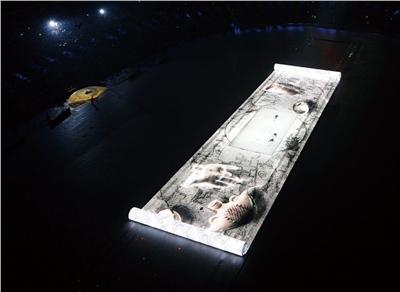
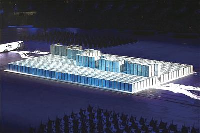
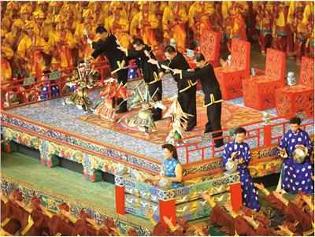
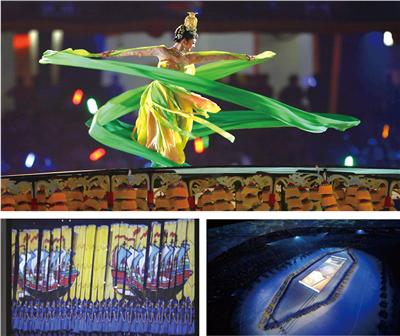
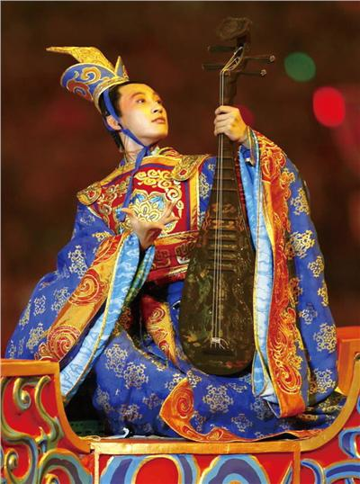

2008年北京奥运会开幕式：中国文化元素令人难忘（上篇）
【来源】：互联网
上篇：灿烂文明
2008年8月8日晚，第29届夏季奥运会在北京开幕。 鲜艳的色彩，强烈的对比，唯美的影像，以及结合实物与特效的前卫尝试，展现出波澜壮阔的历史画卷。2800名鼓手用古代乐器拼出倒计时的画面，紧接着是数万个烟花照亮北京的夜空。为期17天的人类最大的节目拉开了序幕。 名为“灿烂文明”的上篇，用充满中国特色的方式，向世界观众介绍了四大发明、飞天、丝绸之路、音乐、汉字、书法等中国灿烂的古代文化。下篇“辉煌时代”表现了56个民族和谐共存的现在，并用宇航员、地球仪，号召全世界人民共同走向没有矛盾和歧视的未来。 “画卷”表现了中国历史文化的起源和发展。 一幅中国画卷徐徐打开，画卷中央，铺放着一张白纸。造纸术，是中国古代的四大发明之一。画纸四周的绫子上，流淌着中国文化起源和发展的图案，有岩画、陶器和青铜器，随后出现了一张1000多年前的古琴，名为“太古遗音”。舞蹈演员们在纸上用独特的身体语言，凸显了中国水墨画的意趣和韵味。最后留在地面上的是中国古代名画《千里江山图》。 岩画是古人类刻画在岩石上的图画。中国早期岩画可追溯到旧石器时代晚期，表现中国古代社会经济、生活等各方面的内容，是中国先民们留给后人的珍贵文化遗产。 陶器是中国古老的工艺美术品。陶器的制作标志着人类文明的重要进程人类第一次利用天然物，按照自己的意志创造出来一种崭新的东西。 青铜器主要是指中国先秦时期用铜、锡合金制作的器物，以商、周器物最为精美。 古琴是世界最古老的弹拔乐器之一，至今已有3000多年的历史。在中国传统乐器中，古琴深沉飘逸，讲究一种空灵的美感，品格高雅，是中国传统音乐文化的代表。 水墨画是中国画的一种，始于唐代，成于五代，盛于宋元明清，近代以来继续发展。水墨画在中国绘画史上占有重要地位。 千里江山图是中国十大名画之一，是宋代著名山水画家王希孟唯一传世的作品。王希孟的山水画富丽细腻、气势磅礴，是宋代青绿山水画的代表作。

汉字是世界上最古老的文字之一，承载着中华文明源远流长的历史。 孔子“三千弟子”手持竹简，吟诵着《论语》中的名句“四海之内，皆兄弟也”，声音洪亮。接下来是活字印刷表演。“活字印刷”是中国古代的四大发明之一，既像古代的活字字盘，又像现代的电脑键盘。活字印刷表演组合出了三个“和”字，表现了中国汉字的演化过程，也表达了孔子的人文理念：“和为贵”。接下来，活字块以线条的形式表现了长城，简洁而鲜活。最后，舞台出现了朵朵桃花，浪漫、写意，充分表达了中国人民热爱和平的美好心愿。 《论语》是名列世界十大历史名人之首的中国古代思想家孔子的弟子和门人在其逝世后记录、整理的一部集子，约成书于战国初期。《论语》比较集中地反映了孔子的思想，成为儒家学说的经典著作。 竹简是战国至魏晋时代的书写材料，多用竹片制成，每片写字一行。竹简是中国古代最早的书籍形式。 活字印刷术是宋朝的毕昇在雕版印刷的基础上发明的，完成了印刷史上一项重大的革命。活字印刷是人类近代文明的先导，为知识的广泛传播、交流创造了有利条件。 中国汉字的演化经历了甲骨文、金文、篆书、隶书、楷书的演变过程。篆、隶、行、楷、草不同字体的演化，形成了自成一体的独特书法艺术，成为中国造型艺术宝库的瑰宝。 “和为贵”的思想对中华民族优良传统的形成和发展，产生了深刻的影响。 长城，公元前221年秦始皇统一中国后，为防范北方匈奴南侵，将原秦、燕、赵三国的长城整修贯通，始称万里长城。其后各代又不断加固扩展，明代时，将西起嘉峪关、东至山海关绵延6700公里的长城联成一体，完成了一项浩繁巨大的军事防御工程。

中国戏曲历史悠久，品种繁多。中国地域广阔，方言众多，戏曲也衍出数百种。在展示中国戏曲的环节中，舞旗演员身着兵俑服饰。 兵俑是兵马俑的一种。兵马俑是1974年在陕西省秦始皇陵墓区发现的。数千个兵马俑构成巨大的方阵，被称为世界“第八大奇迹”。

“丝绸之路”是中西方经济文化交流的重要通道。 演员举纸前行，展现出闻名遐迩的“丝绸之路”。接着，几百人手持船桨展示出“海上丝绸之路”、“郑和下西洋”的情境。最后，中国的四大发明之一－指南针出现在舞台上。 丝绸之路简称丝路，是指西汉时由张骞出使西域开辟的以长安（今西安）为起点，经甘肃、新疆，到中亚、西亚，并联结地中海各国的陆上通道。 海上丝绸之路是指中国与世界其他地区之间海上交通的路线。中国的丝绸除通过横贯大陆的陆上交通线（丝绸之路）大量输往中亚、西亚和非洲、欧洲国家外，也通过海上交通线源源不断地销往世界各国。 郑和（公元1371－1433年），本姓马，小字三保，云南昆阳（今昆明市晋宁县）人，回族，中国明代著名的航海家、外交家。“郑和下西洋”的故事在中国家喻户晓。 指南针是中国古代的四大发明之一。指南针约在12世纪就传到了欧洲，其在航海上的应用，为以后哥伦布发现美洲新大陆的航行和麦哲伦的环球航行做出了巨大贡献，加速了世界经济的发展进程。

五幅中国长卷画，配以演员们的古典舞，再现了古代中国礼乐之邦的盛世气象。美妙浪漫的昆曲响起。地面上，是中国最有名的五幅长卷画。它们分别来自唐、宋、元、明、清五大朝代。 昆曲是中国古代的剧种，原名“昆山腔”或简称“昆腔”，清朝以来被称为“昆曲”。昆曲于2001年5月18日被联合国教科文组织命名为“人类口述遗产和非物质遗产代表作”。2006年5月20日，昆曲经国务院批准列入第一批国家级非物质文化遗产名录。

下一篇：xxxxx
浏览量：34

- 联系
我们

工作日：
早9:00-晚18:00
杨老师：
400-888-8888